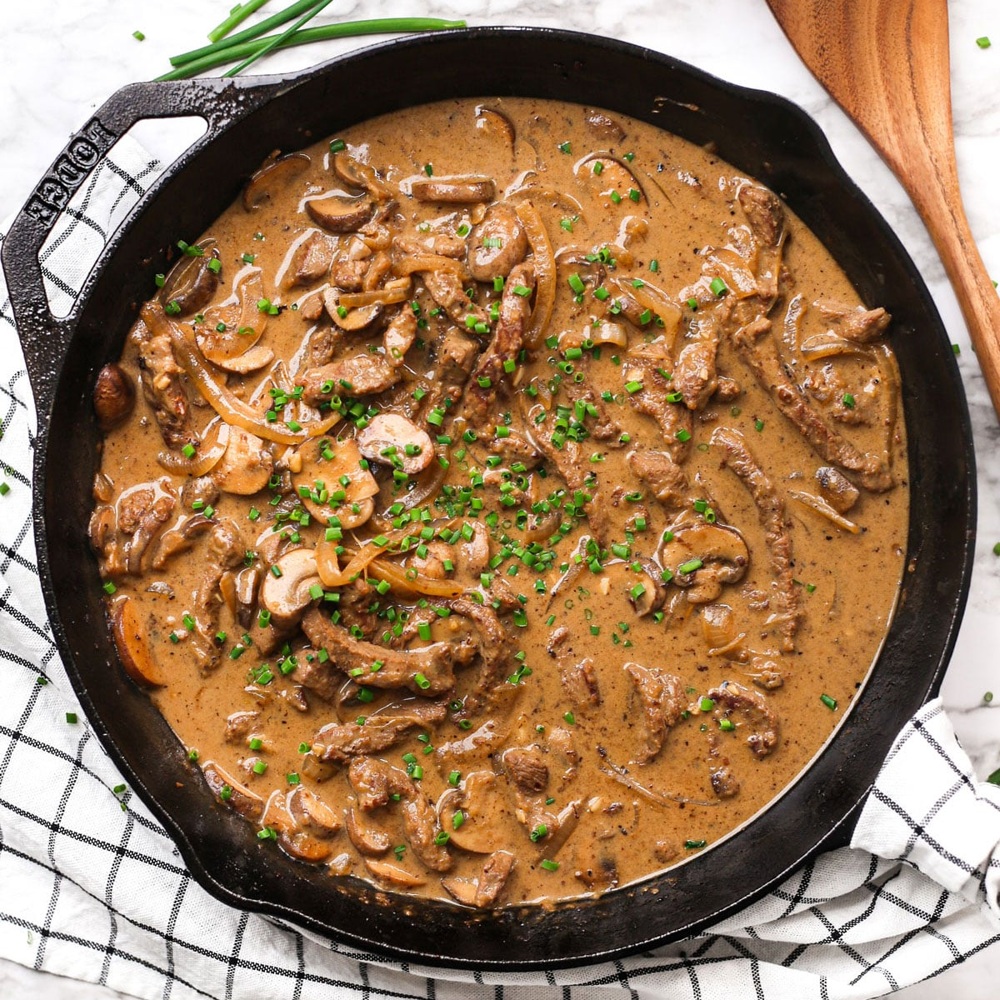

Beef Stroganoff
A tasty dish of beef and mushrooms in a creamy sauce

Description
This eastern european classic is quick to make and sure to impress
Consisting of a punchy mustard cream sauce, thinly sliced beef, serve on pasta or rice for a dish you will want more of!
Ingredients
- 2 flank or sirlion steaks
- 1 large white onion
- 1 bunch of dill
- 150g button mushrooms
- 25ml english mustard
- 3 bulbs garlic
- 250 ml creme fraiche
- 200g taglitelle pasta
Steps
- Bring a pot of water to the boil, and cook the pasta for 12 minutes, once done drain and put to the side in a little oil
- Meanwhile, heat a little oil in a large frying pan, dice your onions and garlic and toss them in on a low heat until softened
- While they cook, slice your steaks as thinly as possible, and put them in a bowl with a little oil, and salt and pepper.
- Add a little butter, water, and the mustard into your pan, and stir around for 1 minute
- Time to turn the heat up slightly and add your steak, flip after 30 seconds, and return the heat to low
- Add in your creme fraiche, and stir occasionaly for the next 5 minutes
- Finally, add in your pasta, while it warms through roughly cho your parsley, this can be added on top as a garnish once plated
- Your dish is complete! serve up and enjoy!